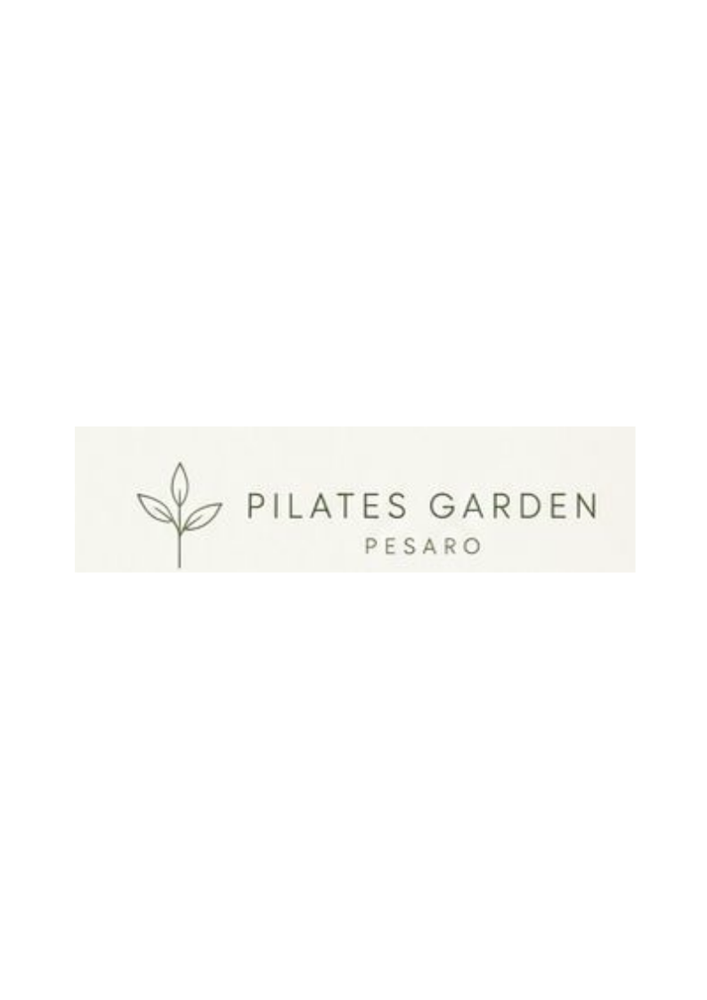
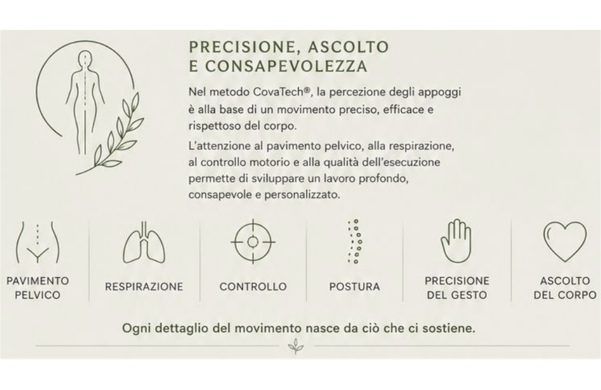
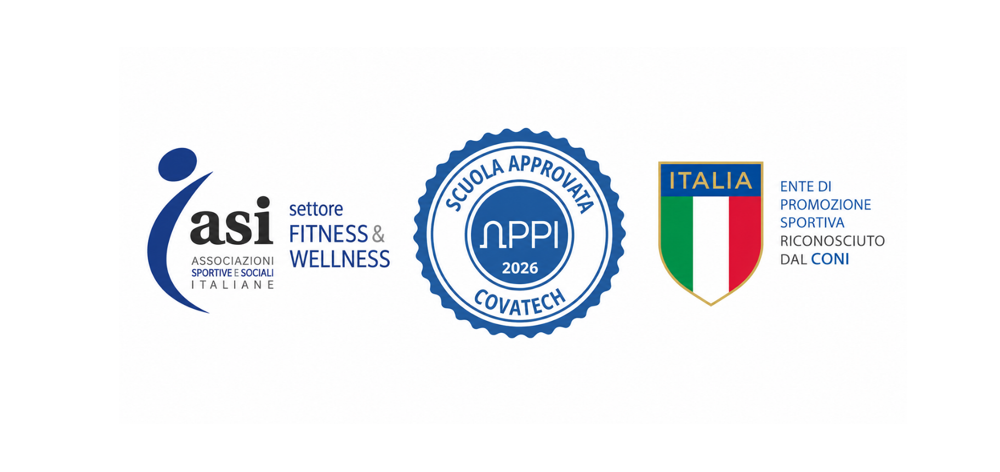

Pilates Garden Pesaro nasce dalla formazione nel metodo CovaTech® Pilates, una delle realtà storiche più autorevoli nel panorama della formazione Pilates in Italia.
Fondata nel 1989 da Anna Maria Cova, CovaTech® Pilates è stata la prima scuola di formazione Pilates nata in Italia e rappresenta oggi un centro di eccellenza riconosciuto a livello italiano ed internazionale.
Da oltre trent'anni il metodo unisce ricerca, esperienza didattica e approfondimento tecnico, con un approccio fondato sulla precisione del movimento, sulla consapevolezza corporea e sulla qualità degli appoggi.

